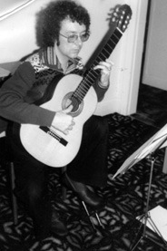

From the age of 11, when he began learning to play guitar, music has been a huge part of Chris’ life. His early foray into composition produced both instrumental music and songs, in the hope of becoming the next Hank Marvin, although he was able to develop his style once he was persuaded that he could just be proud of being Chris Dumigan! Collaborations with friends resulted in a plethora of new material, including two rock musicals. Today, Chris has over 150 songs to his name.
In 1974, Genesis Theatre was formed with Chris as musical director. The group put on ambitious performances such as Hair and Tommy, along with Chris’ own musicals, Stag and Marilyn, highlights from which were performed in concert form decades later with some of the original cast to raise money for Brentwood School, a special school for 11-19 year-olds that Chris’ daughter attends.
During the 80s, Chris left songwriting behind him and moved on to composing for classical guitar. This led to arrangements of other people’s works and even transcribing (amongst many other people's pieces) the enormous catalogue of Paraguayan guitarist Agustin Barrios. His original compositions have been performed around the world by such notable musicians as Craig Ogden and Valerie Hartzell.
When not writing his own music, Chris reviews the work of others for the US-based Classical Guitar magazine, teaches guitar and music theory and plays guitar at private functions, dipping into his six hours of material arranged, sometimes on the spot, for such occasions. Some of this material is available in two volumes of sheet music and three CDs recorded by Chris.
Another important part of Chris’ time was the co-foundership of Manchester Acoustic Guitar with his old mate Chas Coghill – meeting once a month to play and celebrate all acoustic guitar-based music in a relaxed environment.
Please enjoy browsing these pages documenting all of Chris' projects over the years and, if you want to know more about the man himself, feel free to read a more in-depth biography here.